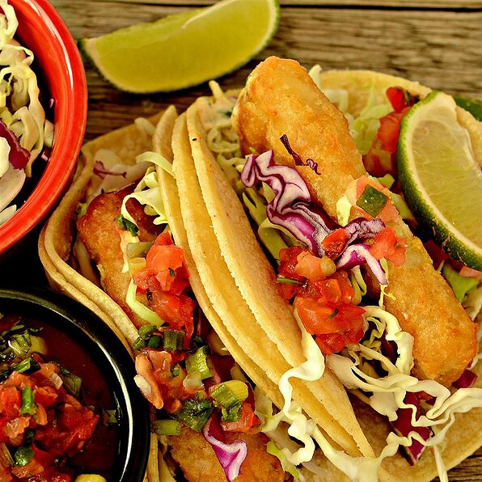

Wonderful Fried Fish Tacos

Description
Beer battered, fried fish tacos served with all the fixings. The fish of choice is cod, but haddock is also a good bet.
Ingredients
- 1 cup dark beer
- 1 cup all-purpose flour
- ½ teaspoon salt
- 1 ½ pounds cod fillets, cubed
- 1 quart vegetable oil for frying
- 20 (6 inch) corn tortillas
- 5 cups shredded cabbage
- 1 cup mayonnaise
- ¼ cup salsa
- 1 lime, cut into wedges
Steps
- In a shallow bowl, whisk together beer, flour, and salt.
- Rinse fish, and pat dry. Cut into 10 equal pieces.
- In a large saucepan, heat 1 inch oil to 360 degrees F (168 degrees C). Using a fork, coat fish pieces in batter. Slide coated fish into hot oil in batches; adjust heat to maintain oil temperature. Fry until golden, about 2 minutes. Lift out with a slotted spoon, and drain briefly on paper towels; keep warm. Repeat to fry remaining fish.
- Stack 2 tortillas. Place a piece of fish and 1/2 cup cabbage in the center of the tortillas. Garnish with mayonnaise, lime wedges and salsa.
Back